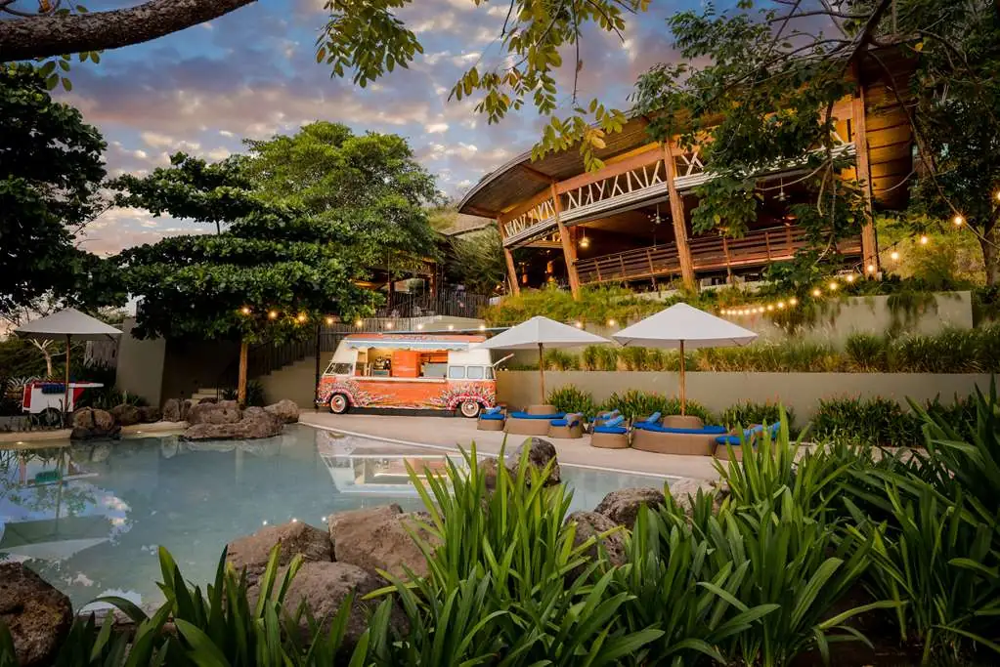
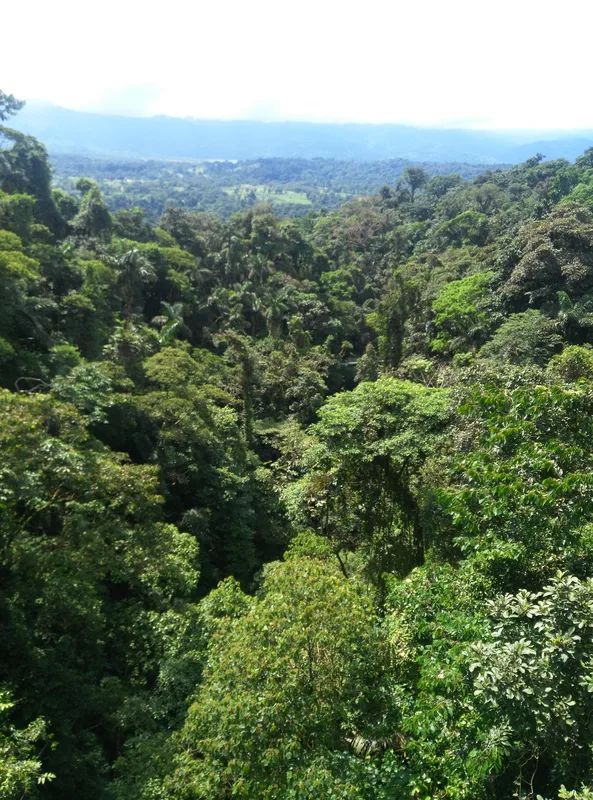
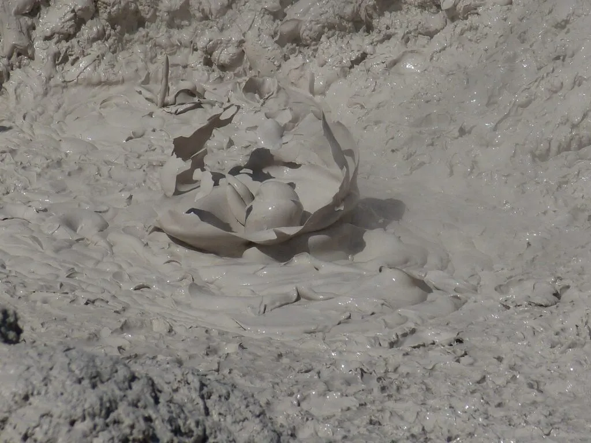
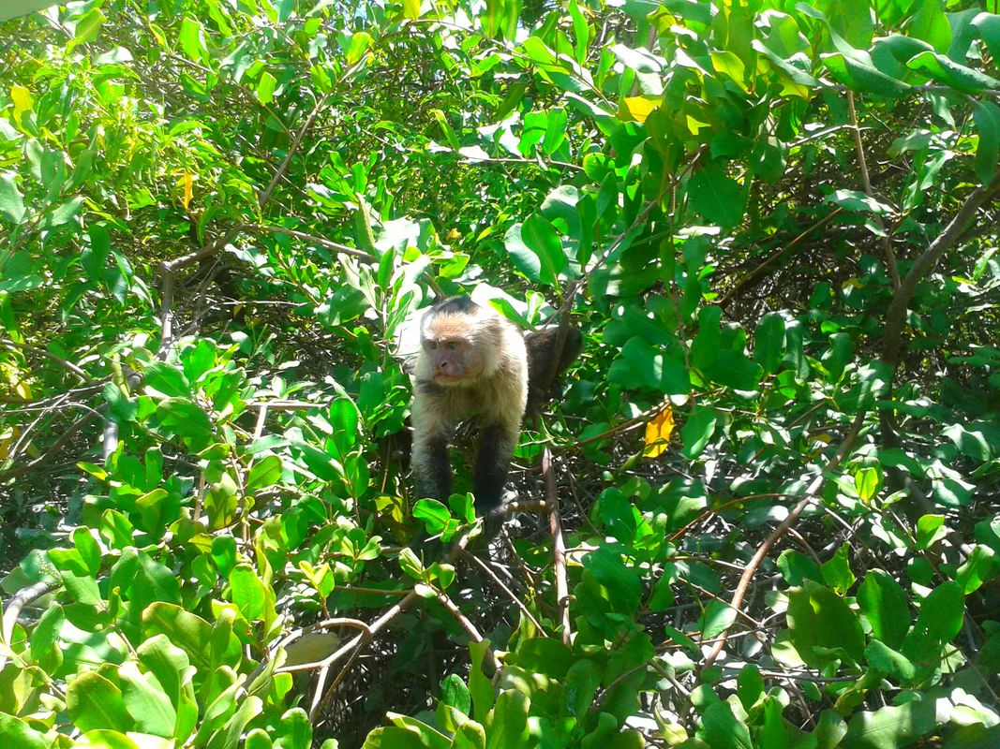
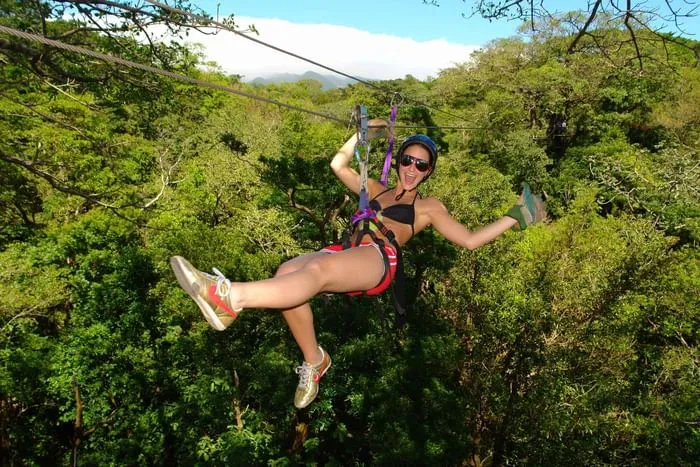
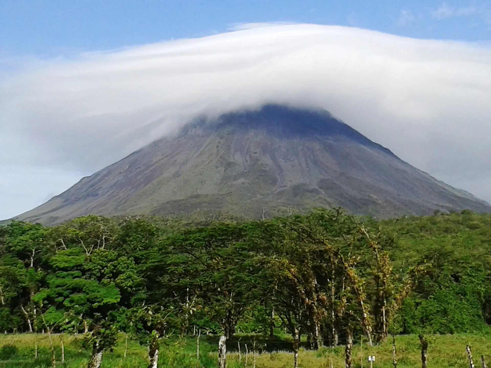

Private Tours from Andaz Peninsula Papagayo
Private journeys from Andaz Peninsula Papagayo with direct resort pickup, dedicated local guides and flexible experiences designed around your interests, pace and available time.

Explore Beyond Andaz Peninsula Papagayo
Andaz Peninsula Papagayo offers beaches, dining, wellness and activities within one of Costa Rica's most distinctive resort destinations. When you want to experience more of the country, Wild Papagayo connects your stay with private journeys into Guanacaste and northern Costa Rica.
Explore wildlife, rainforest, volcanoes, waterfalls, hot springs, adventure experiences and local culture without adjusting your day to a shared tour schedule.
Book Direct. Explore Privately. Work directly with a local Costa Rican operator specializing in private experiences from Papagayo.
Best Private Tours from Andaz Papagayo

Hanging Bridges & Sloths Experience
Explore tropical forest with a local guide while searching for sloths and other wildlife on one of the most nature-focused private experiences from Andaz.
View Experience →
Celeste River Hike & Tenorio National Park
Travel into northern Costa Rica for rainforest landscapes and the striking blue waters of Rio Celeste.
View Experience →
Rincon de la Vieja Hiking Tour
Discover one of Guanacaste's volcanic landscapes through trails and geothermal features on a private full-day hike.
View Experience →
Palo Verde River Boat Tour
A relaxed way to experience Costa Rican wildlife, especially for travelers who prefer less strenuous activity.
View Experience →
Buena Vista Mega Combo
Zip line, waterslide and hot springs combined into one active day for travelers who want more than sightseeing.
View Experience →
Costa Rica Highlights Tour — Sloths, Waterfall, Coffee, Hot Springs & Hanging Bridges
A full-day introduction to several of the landscapes and experiences that make northern Costa Rica special.
View Experience →
Rainforest & Hot Springs Arenal
Volcano views and natural hot springs near La Fortuna, a longer day trip worth the drive.
View Experience →Choose Your Tour by Travel Style
| Best For... | Recommended Experience |
|---|---|
| Couples | Celeste River Hike & Tenorio National Park |
| Families | Hanging Bridges & Sloths Experience |
| Wildlife lovers | Palo Verde River Boat Tour |
| Adventure | Buena Vista Mega Combo |
| First-time visitors | Costa Rica Highlights Tour — Sloths, Waterfall, Coffee, Hot Springs & Hanging Bridges |
If You Only Have One Free Day
| You Want... | Recommended Experience |
|---|---|
| Wildlife? | Hanging Bridges & Sloths Experience |
| A volcano? | Rincon de la Vieja Hiking Tour |
| Iconic scenery? | Celeste River Hike & Tenorio National Park |
| Adventure? | Buena Vista Mega Combo |
| Several Costa Rica highlights? | Costa Rica Highlights Tour — Sloths, Waterfall, Coffee, Hot Springs & Hanging Bridges |
Direct Pickup From Andaz Peninsula Papagayo
Your private tour begins directly from Andaz Peninsula Papagayo. Wild Papagayo coordinates pickup according to your selected experience and departure time, with private transportation reserved for your group.
After your tour, transportation returns you directly to Andaz unless another destination has been arranged in advance.
Plan a Tour From AndazHow Far Are Costa Rica's Top Experiences from Andaz?
| Destination | Approx. Travel Time from Andaz | Best For |
|---|---|---|
| Buena Vista Adventure Center | 86–110 min | Adventure |
| Rincon de la Vieja (Las Pailas) | 93–118 min | Volcano & hiking |
| Palo Verde National Park | 87–112 min | Wildlife |
| Bijagua (sloth area) | 95–122 min | Wildlife |
| Rio Celeste | 110–140 min | Nature & scenery |
| La Fortuna / Arenal | 171–218 min | Full-day journey |
Travel times vary with road conditions, traffic and the exact activity selected. Your Wild Papagayo concierge can recommend the best departure time from Andaz for your itinerary. (Computed from real driving distance via Google Routes, from Andaz Peninsula Papagayo to each destination.)
Private Tours for Couples Staying at Andaz
A private experience gives two travelers the freedom to choose the pace of the day, spend more time where it matters and avoid a fixed shared-tour itinerary.
Nature-Focused Day
Rio Celeste or wildlife-focused experiences for couples who want scenery and nature.
Relaxed Full Day
Nature paired with hot springs or local experiences where the itinerary allows.
Active Day
Hiking and adventure experiences for couples who want to stay active.
Private Tours for Families at Andaz
Private transportation and flexible pacing can make exploring Costa Rica easier for families staying at Andaz.
Younger Travelers
Wildlife-focused experiences and less demanding days suit families with young children.
Active Families
Hanging bridges and adventure experiences give older kids more to be active about.
Multigenerational Groups
We can adapt the pace so tours work for every generation traveling together.
Why Explore Privately?
Private Transportation
Your own vehicle for the day.
Dedicated Local Guide
Focused on your group.
Direct Resort Pickup
Start from Andaz.
Flexible Pacing
No shared-tour schedule.
Local Recommendations
Tour selection based on what you want to see and how much time you have.
Personal Concierge
Help planning before the experience.
Liberia Airport Transportation to Andaz
Wild Papagayo can also coordinate private transportation between Guanacaste Airport (LIR) and Andaz Peninsula Papagayo, roughly 32–40 minutes away, allowing you to arrange airport transfers and private day trips with the same local team.
View Liberia Airport Transportation →Staying at Andaz Peninsula Papagayo?
Explore our Andaz resort guide for hotel information, transportation, nearby experiences and planning your stay in Peninsula Papagayo.
View Andaz Resort Guide →Not Sure Which Volcano Fits Your Day?
Miravalles, Rincon de la Vieja, Arenal and Tenorio each offer a different kind of day. See how they compare before deciding.
Compare Volcano Tours →Frequently Asked Questions
What are the best private tours from Andaz Peninsula Papagayo?
The Hanging Bridges & Sloths Experience, Rio Celeste, Rincon de la Vieja and the Buena Vista Mega Combo are among our most popular picks for Andaz guests, depending on your travel style.
Does Wild Papagayo pick up directly from Andaz?
Yes. Every tour includes private pickup directly from Andaz Peninsula Papagayo, coordinated around your selected experience and departure time.
Are the tours private or shared?
Every tour is private for your group, with your own vehicle, guide and pace, not a shared bus with other travelers.
What is the best wildlife tour from Andaz Papagayo?
The Hanging Bridges & Sloths Experience and the Palo Verde River Boat Tour are our top wildlife-focused options, each with a different pace and terrain.
What is the best tour if we only have one free day?
It depends on what you most want to see: Hanging Bridges & Sloths for wildlife, Rincon de la Vieja for a volcano, Rio Celeste for iconic scenery, or Costa Rica Highlights to combine several in one day.
Can families book private tours from Andaz?
Yes. Many of our tours are family-friendly, and because every tour is private, pacing can be adapted to the ages traveling with you.
Can we customize our itinerary?
Yes. Because every tour is private, pickup time, pacing and add-ons can be tailored to your group. Tell us your dates and interests and we'll help build the day.
How far are Rio Celeste and Rincon de la Vieja from Andaz?
Rio Celeste is roughly 110 to 140 minutes by private transfer, and Rincon de la Vieja's Las Pailas sector is roughly 93 to 118 minutes, based on real driving distance from Andaz.
ONE FREE DAY CAN SHOW YOU A DIFFERENT SIDE OF COSTA RICA.
Tell Us How You'd Like to Spend It
Tell us who you're traveling with, how much time you have and what you'd most like to experience. We'll help you choose a private journey that fits naturally into your stay at Andaz Peninsula Papagayo.